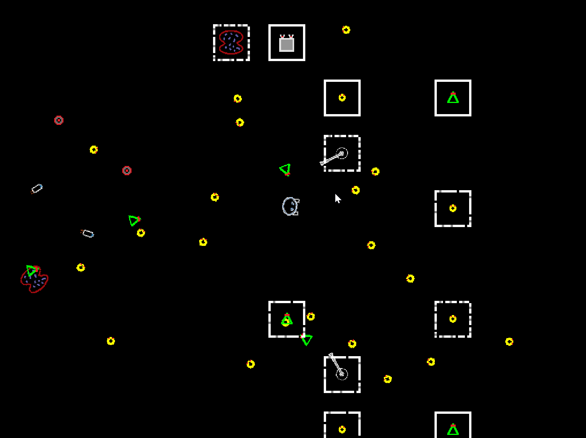
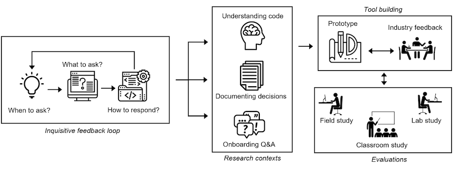

Associate Teaching Professor
Carnegie Mellon University
I never intended to work with AI or ML. It more so happened along the way naturally from using whatever tools I needed for the task, and eventually it took over. I didn't even realize it at the time.
Given that it is New Year's Eve, it seems appropriate to look back on my career to see how I got here. Let's go back to the year 2000 and walk through the major AI/ML concepts I learned since then.
I've talked about how I got into programming before: Learning HTML was too hard so I made a compiler instead. But along the way, I also tried to make video games (like any kid).
The first project I remember making in VB6 was a game based on Tamagotchi pets.
Unfortunately, I had no idea how to make the pet "come alive".
The best I came up with was a timer that triggers some effect every X seconds plus some conditionals. Increase pet's hunger every 10 seconds. Decrement health every 3 seconds if hunger level is greater than 5. Faint if health reaches 0.
Not a fun game at all.
Fast forward to high school. The biggest game I made at the time without giving up was a 2d space shooter where you defended yourself against waves of enemies while collecting simple powerups. A pretty standard exercise for a wanna-be game developer. For this, I hard coded a long, long sequence of if statements that used random numbers, how long you've been playing, how many shots you have fired, your hp, etc. to determine which wave of enemies to send out next. Finally, it felt dynamic and not entirely predictable. It was even almost fun. But no one would play it more than a few minutes. (Unfortunately, I can't find any screenshots from this era.)
Somewhere in the mid-2000s, I purchased the book Programming Game AI by Example (Amazon). It took a few years to prove useful though...
In college, I took it up a notch with my games. They were played by millions, and I even made money! My coding skills were finally maturing, I could put what I read in books into practice, and my roommate spent every waking moment making games.
I used finite state machines for the enemy behaviors, the factory pattern to spawn and manage objects, and higher order functions to make enemies and weapons composable. Each unit, each weapon, and each bullet was given a set of behavior functions that would execute each frame to determine what happens next (e.g., the weapon will shoot bullets in bursts that are in the shape of a narrow cone that oscillates left and right 25 degrees; the bullets will slightly home into the nearest target and have a 1% chance of ricocheting)
I found that incrementally adding a bit of dynamism (i.e., based on the game state and the player's input) and variation (i.e., changing behaviors through randomness and composability) made my games much, much more fun. It required layers though. I needed to add this to everything: sprites, particle emitters, sound effects, enemies, bullets, and animations, not just the enemy behaviors.
The games started to feel alive!
But this isn't AI, right? In the end, it is just some handcrafted if statements and well-architectured function calls. Hmmm.
After graduating, I enrolled in a MS program at the very last minute (as in, after the deadline and just before the Spring semester started). That meant most of the courses were full. I signed up for the only ones available, which included Artificial Intelligence and Neural Networks. I was hoping for a compilers course!
I was disappointed when I found out that neither of these courses involved any coding or how to implement what we learned. They were very high level and we spent a lot of arguing over definitions.
The AI course consisted of in-class discussions dissecting the famous book, Artificial Intelligence: A Modern Approach, Third Edition (Amazon). I learned about planning, agents, first-order logic, and knowledge representation. It gave me some vocabulary for thinking about these problems, but I wasn't able to make the leap of applying any of it. Sorry, Norvig.
The neural network course was heavy on theory. We covered perceptrons, support vector machines, feedforward networks, hopfield models, and back propagation. The textbook wasn't useful so I won't link to it. I asked the professor how I could actually build a neural network and he said, "I think there is a MATLAB package". Welp.
I spent the summer and fall trying to put this knowledge to use.
I built a program for low-bandwidth video chat. I used OpenCV to detect the face, extract regions of the face, and then a classifier to determine the state of those regions. For example, is the mouth curving up? Is the left brow raised? Is the right eye open? I had several hundreds of labeled face images from some open database back then. The application sent the binary states over a socket to be used to draw an avatar using OpenGL.
It didn't work well. It was tedious to modify, it was extremely sensitive to lighting, minor changes to parameters would have big consequences, OpenCV was a pain to use, and training took forever.
I really had no idea what I was doing, but I eventually learned a lot and got it somewhat working! Here is a [very amateur] demo video that I uploaded in January 2013:
Over 1000 views!
As I got into my PhD, I needed statistical methods to analyze log data from code editors. Can I identify when a programmer is stuck or lost in the code? Can I predict which file they'll navigate to next? Can I accurately recommend code of interest?

I learned how to use the C4.5 algorithm to generate decision trees, k-means and DBCSCAN to cluster events, and Apriori and collaborative filtering to find associations between events. Although fairly simple, these are surprisingly powerful. In fact, I'd say that most of the time that you think you need a big neural network, you don't!

These methods got the job done. I published papers , did a bunch of internships, and built developer tools involving these, and eventually graduated.
If you want to read more about some of these projects, I recommend starting with:
As a new tenure-track professor in 2018, I needed a schtick that I would base all my research around. I chose intelligent developer tools, though it was much fuzzier of a concept in my head back then. My first week on the job, I submitted a grant proposal where I'd use predictive models to preemptively identify and correct programmers' misconceptions.
The abstract of the proposal said:
In particular, this project will develop novel tool designs that accomplish three mutually supportive goals: (1) identify misconceptions that novice programmers have about their program's behavior by leveraging program analysis techniques and predictive models, (2) correct novice programmers' misconceptions and explain the rationale without disrupting the programmers, and (3) prevent future misconceptions by generating test code for the novice programmers that will catch unintended changes to the program's behavior.
I summarized that project in my post, An inquisitive code editor: Overcome bugs before you know you have them.
Next, I collaborated on a project where we'd use models to predict the information needs of programmers and generate user interfaces for them on the fly (e.g., if they're looking through their git history for relevant code, generate a visualization comparing a recommended set of commits).
Then I tied all this work together into my grand vision: Inquisitive Programming Environments as Learning Environments for Novices and Experts. You can see the proposal (pdf) and my blog post on how I wrote it (What a $500,000 grant proposal looks like).
However, I resigned right around the time I was notified the grant was being funded, so I didn't get to make more progress.
In 2022, I joined the program synthesis team at Microsoft. Now I was immersed in AI. It was perfect timing because ChatGpt was released 9 months later and the world forced LLMs upon everything.

Although I was on an AI team, I often pushed back against applying AI unless we had a really compelling reason. What is the user problem we are trying to solve? Do we really need an LLM or could a few if statements suffice? Are we sure that natural language is the appropriate interface for this? I went on to share my opinions: Natural language is the lazy interface and Don't trap me in a chat window.
I worked on a lot of cool projects. Including:
Since leaving Microsoft, I continue to tinker on my own AI tools, such as Mirror and Promptclipper.
It has been a fun 20 years.
What's next? I'm not sure yet, but I'm going to keep building.